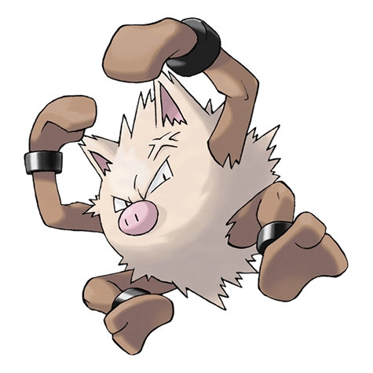

Назад
Праймейп

Праймейп — Покемон 1 поколения под номером 57 в Покедекс. Обитает он в регионе Канто и относится к Боевому типу. Когда Праймейп приходит в ярость, его кровообращение усиливается. В свою очередь, мышцы этого Покемона становятся ещё сильнее. Однако из-за этого он жертвует своим рассудком.
Тип:
Боевой
Эволюция
# 057 Праймейп
Финальная стадия